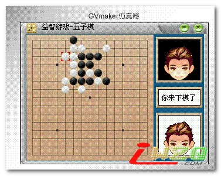
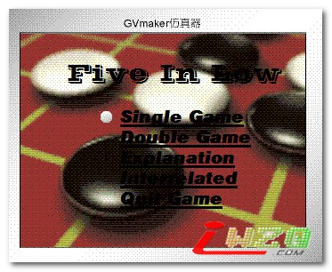

文曲星上的五子棋游戏
首页
五子棋软件
#1 文曲星上的五子棋游戏 作者：有志青年 发表时间：2007-5-24 10:47:08
【软件名称】 Five In Low(五子棋)
【软件类型】 益智游戏
【最新版本】 1.00
【软件修改】 Isword
【适用平台】 GVM2
【按键说明】
用方向键和输入键来进行下子，游戏的规则和一般的五子棋规则一样．


点击下载
#2 Re:文曲星上的五子棋游戏 作者：极地剑客 发表时间：2007-5-26 7:09:38
步步高的机器能用不？
看着好象蛮好玩的呀~能显示子数吗
#3 Re:文曲星上的五子棋游戏 作者：极地剑客 发表时间：2007-5-26 7:10:51
怎么看着你这个也是彩色啊~我那个是黑白的~~555，估计玩不了了~